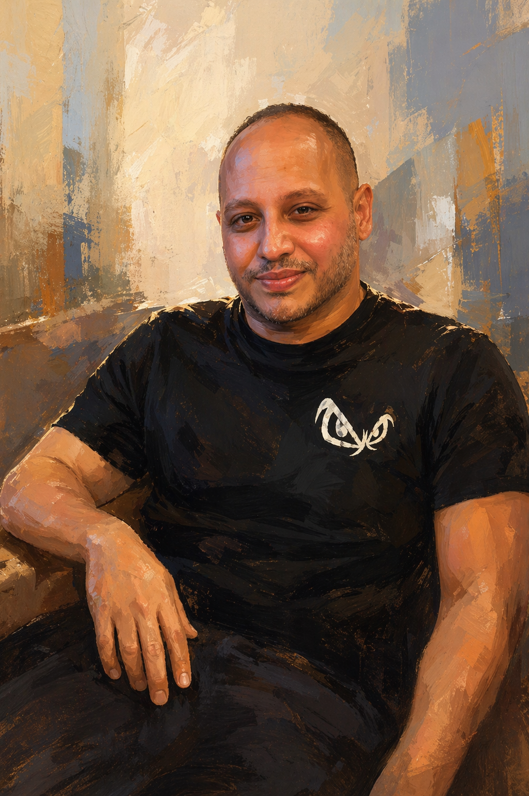

לזכרו של
הוויקטור שלנו
אוספים זיכרונות · ממשיכים דרך
ויקטור נגע בחיים של כל כך הרבה מאיתנו — בצבא, בחינוך, בשכונה, במשפחה. לכל אחד יש את הוויקטור שלו. בימים האלה, כשאנחנו נפרדים, אנחנו רוצים לאסוף את כל הרגעים, הסיפורים והחיוכים למקום אחד. הקדישו רגע — וספרו לנו על ויקטור שלכם.
תודה שחלקת איתנו
הזיכרון שלך הוא חלק ממי שהיה ויקטור. הפרטים נשמרו, ואנחנו נהיה בקשר בהמשך הדרך.